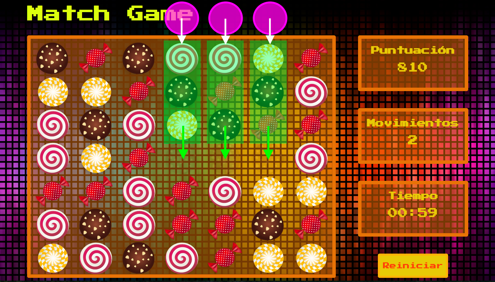
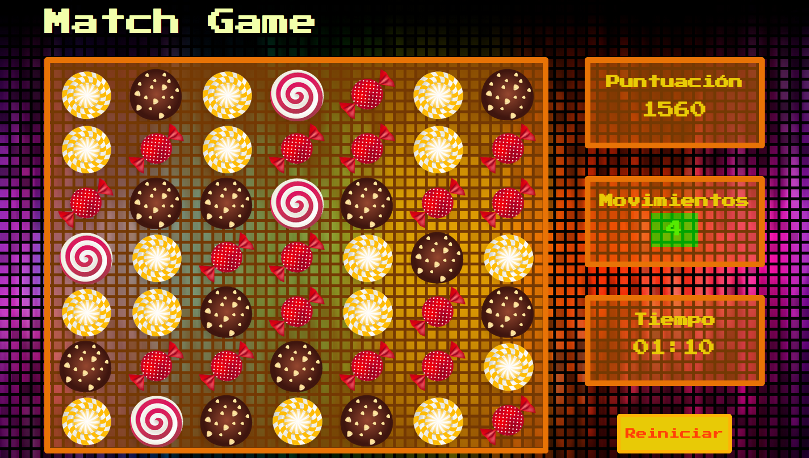

¿Preparado para el reto del juego?
¿Preparado para el reto del juego?
¿Preparado para el reto del juego?
¿Preparado para el reto del juego?
En Internet puedes encontrar una gran cantidad de portales de juegos de uso gratuito y pago. Incluso, algunos de ellos, asociados a tus redes sociales. Y es que jugar es una actividad propia del ser humano y es útil para: aprender de manera divertida o simplemente para fugarse de las actividades diarias, en los tiempos libres.
Gracias a las nuevas tecnologías, los juegos y actividades virtuales se han convertido en una excelente manera de desarrollar habilidades cognitivas y estratégicas. Por eso es importante que fortalezcas tus destrezas en este tema.
Desarrollar un juego de asociación de imágenes poniendo en práctica tus conocimientos en los frameworks y librerías de JavaScript, haciendo uso de animaciones y efectos.
Para el desarrollo de este proyecto debes basarte en el siguiente Proyecto Base . Allí encontrarás el diseño de la página, el tablero de juego con una estructura de 7 filas y 7 columnas para ubicar los dulces, las imágenes de los dulces, y las pantallas que muestran información sobre el juego.
El videojuego que desarrolles debe permitir a un jugador iniciar una partida, en la que debe hacer emparejamientos de mínimo 3 dulces del mismo tipo en línea, al lograrlo, se deben sumar los puntos correspondientes y los dulces en cuestión deben desaparecer, permitiendo que más dulces generados aleatoriamente ocupen su lugar. El jugador con mayor cantidad de puntos al finalizar el tiempo es el ganador.
Los requerimientos específicos de este proyecto son:
El título “Match Game” debe tener una animación que cambie de color después de determinado tiempo, posteriormente vuelva al color original, y permanezca cambiando entre dos colores indefinidamente.
Se deben generar los dulces aleatoriamente en el tablero, llenándolo todo al principio del juego. Cada vez que se realice una combinación de 3 dulces o más en línea, y posteriormente desaparezcan, estos espacios se deben llenar con los dulces inmediatamente anteriores verticalmente a los espacios; creando nuevos dulces aleatorios para llenar en la parte de arriba del tablero. Esto debe mostrar un efecto en el que la gravedad hace que todos los dulces se desplacen hacia abajo y se llenen los nuevos desde la parte superior del tablero.
Verificar si hay como mínimo tres dulces del mismo tipo en línea, en caso tal, deben desaparecer con un efecto animado. Esto debe sumar puntos en el puntaje general.
El juego debe tener un temporizador a dos minutos, que inicie con el juego y al cumplirse el tiempo, cambie mediante animaciones el aspecto de la página eliminando el tablero de juego, y mostrando en toda la página el puntaje y el número de movimientos. Puedes aplicar un plugin externo de código abierto para implementar el temporizador en el proyecto.
Cada vez que el jugador realice un movimiento, debe aumentarse un contador que se muestra en pantalla.
El botón de Iniciar en la parte inferior izquierda, debe cambiar su contenido a Reiniciar una vez se oprima por primera vez. Al presionar reiniciar se debe volver a cargar la página para empezar un nuevo juego.
La interacción del usuario con el elemento dulce debe ser de drag & drop.
Cada vez que se alteren los elementos del tablero, se debe verificar si hay dulces en línea, no necesariamente con un movimiento del jugador se pueden anotar puntos.
Debes usar la función setTimeout de JavaScript para retrasar la ejecución de funciones según un tiempo determinado, con el fin de darle un orden a las animaciones y acciones que interactúan en el juego.
Una vez finalices el proyecto, comprime la carpeta con los archivos y súbela al curso. Ten presentes los siguientes pasos para completar este último requerimiento, de la manera adecuada:
En una carpeta guarda tu proyecto y todos los recursos que consideres necesarios para su funcionamiento. Demás, guarda un archivo github_url.txt que contenga la URL de tu proyecto versionado en el repositorio.
Recuerda que haciendo uso de Git Hub podrás crear tu portafolio de aplicaciones web.
Utiliza la siguiente estructura para nombrar la carpeta Zip que entregarás pues nos permitirá identificarte: NombreDelCurso_PrimerNombre_PrimerApellido.zip
Para subir el Zip al curso: